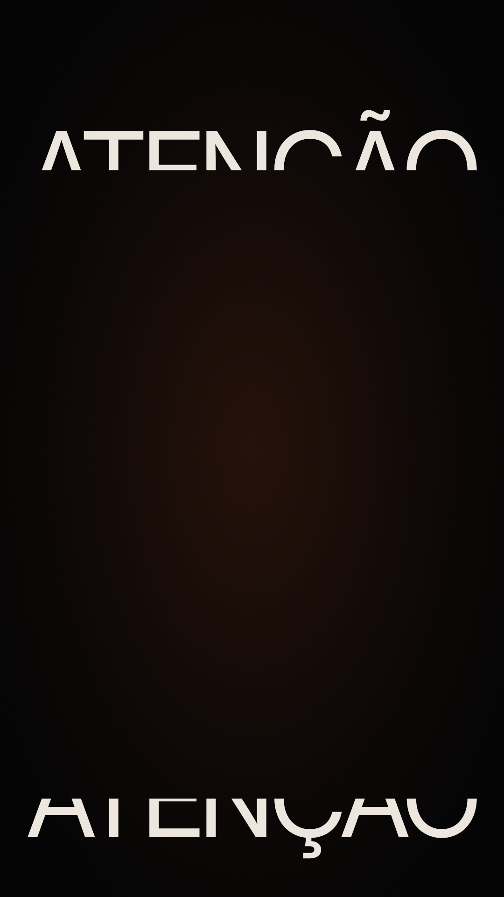
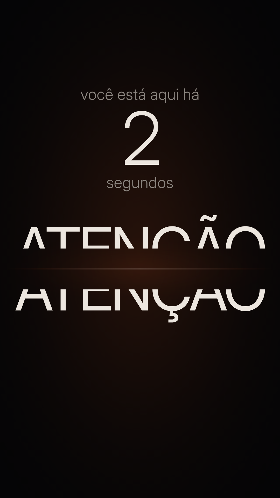

O gancho
ATENÇÃO, cortada ao meio, se reencontra devagar: as metades vêm das bordas e chegam a um fio uma da outra, sem nunca encostar.


- 0,0 s Objeto As metades entram pelas bordas, de cima e de baixo, rápidas no começo e cada vez mais devagar (como se nunca fossem chegar).
- 1,0 s Tipografia O relógio sai do desfoque: “você está aqui há 1 segundo”. Cada segundo vira na hora certa, o número sobe de pertinho.
- 3,0 s Luz A fenda entre elas acende do centro para as pontas e esquenta a cada centímetro que falta.
- 4,5 s Câmera A um fio: a câmera treme 0,1 %, as metades dão dois micro-avanços e param (quase).
- 5,5 s Vida no hold Hold: a brasa respira, a câmera continua chegando; nada encosta.